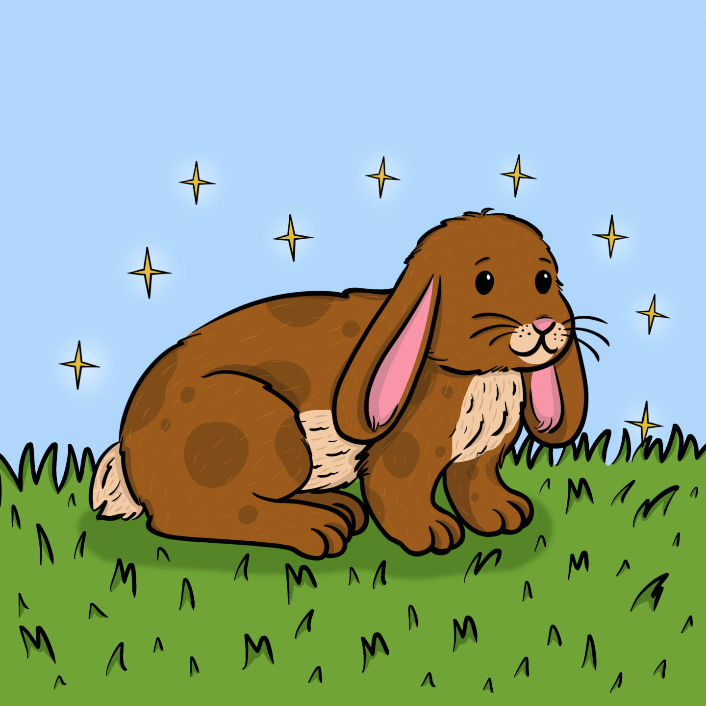

The Velveteen Rabbit

A soft and fluffy VelveteenRabbit lived in a toybox in a Boy's room. tvr Each day, the Boy opened the toybox and picked up Velveteen Rabbit. And Velveteen Rabbit was happy.Then newer, brighter toys came into the toybox. They had special tricks. Some could move when the Boy pushed a button. Others bounced high.
Velveteen Rabbit
had no special tricks or buttons. No wonder the Boy started to choose these other new toys.
At night, when the toys were back all in the toy box, the other toys talked with pride about the fine things they could do. Velveteen Rabbit was quiet. There was not much to say.Only one other toy in the toy box was like Velveteen Rabbit. Cowboy Horse was also a soft, fluffy toy. But he was old. Most of his hair was worn away.
Cowboy Horse said to Velveteen Rabbit, “Soft toys like us are really the lucky ones". We get loved the most. And when soft toys get loved and loved, we can become Real.”
“What is Real?” said Velveteen Rabbit.
“Being Real is the best," said Cowboy Horse. "You can move when you want to move. When you are Real, if you are loved, you can show your love back.”
day Nana, who took care of the Boy,
flew open the lid of the toy box. She said in a busy tone, “Oh, dear! That walking doggie is missing. I must find something else for the Boy!” In a second, Velveteen Rabbit was plopped down onto the bed with the Boy.
This began another happy time for Velveteen Rabbit. Each night the Boy would hold Velveteen Rabbit close in his arms. In the morning, the Boy would show Velveteen Rabbit how to make rabbit holes under the sheets. If the Boy went outside to a picnic, or to the park, Velveteen Rabbit would come with him, too.
After awhile, with the hugging and holding, much of Velveteen Rabbit’s fur got matted down. Its pink nose grew less pink with all the Boy’s kisses. But Velveteen Rabbit did not care. It was happy.
One day the Boy became sick. His forehead got very hot. The doctor came and went. Nana walked back and forth in fear. Day after day, the Boy stayed in bed. There was nothing for Velveteen Rabbit to do but to stay in bed, too, day after day.
Velveteen Rabbit
Then at last, the Boy got better. Such joy in the house! The doctor said the Boy must go to the shore. How wonderful! thought Velveteen Rabbit. Many times the Boy had talked happily about the shore, and told of its white sands and big blue ocean.
“What about this old bunny?” Nana asked the doctor.
“That old thing?” said the doctor. “It’s full of scarlet fever germs. Burn it at once! Get him a new bunny.”
So Velveteen Rabbit was thrown into a sack along with the Boy's bed sheets and old clothes and a lot of junk. The sack was carried to the backyard. The gardener was told to burn the whole thing.
But the gardener was too busy with picking the beans and peas before nightfall, so he left the sack behind. “I will take care of it tomorrow,” he said. The sack was not tied at the top, and Velveteen Rabbit fell out.
click here more stories